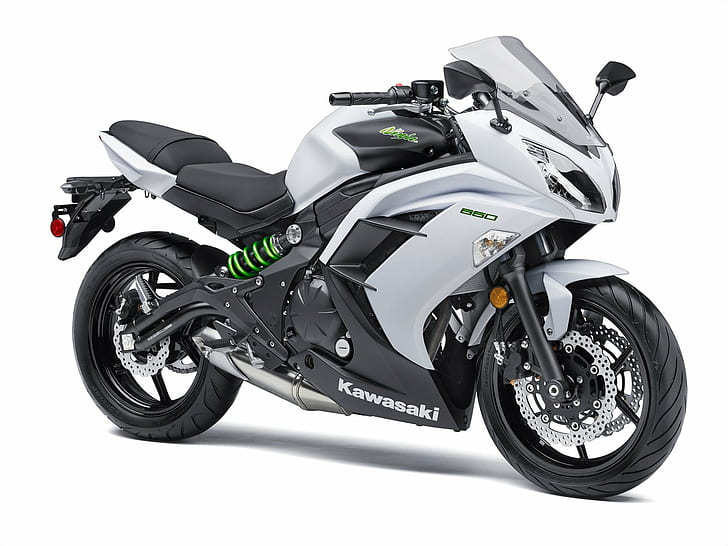
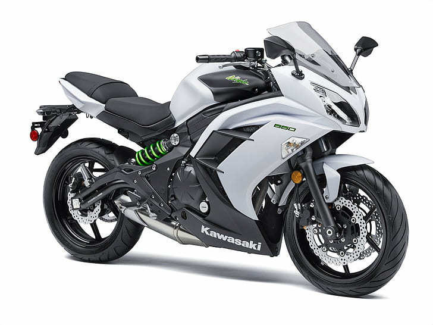

Engine CC - 998.0 CC
Liquid - cool
Supercharged
Fuel - Petrol
Mileage - 15 KM/L
Max Torque - 165.00 Nm
Max Power - 326.00 bhp
Length/Width/Height - 2070/ 851/1161
FRONT / WHEEL TRAVEL-Ø 43 mm inverted fork with rebound and compression damping, spring preload adjustability and top-out springs / 330 mm.
REAR / WHEEL TRAVEL-New Uni-Trak, Öhlins TTX36 gas-charged shock with piggyback reservoir, compression and rebound damping, spring preload adjustability and top-out spring / 135 mm.
BRAKE - FRONT-Dual Semi-Floating 330 mm Brembo Discs
CALIPER - FRONT Dual Radial-Mount, Brembo M50 Monobloc Opposed 4-Piston.
BRAKE - REAR Single 250 mm Disc.
CALIPER - REAR Brembo, Opposed 2-Piston,
Engine CC - 998.0 CC
4 Stroke 16 Valve DOHC
6 Speed with Dog Ring
Liquid - cool
Fuel - Petrol
Mileage - 15 KM/L
Max Torque - 165.00 Nm
Max Power - 322.00 bhp
Length/Width/Height - 2070/ 851/1161
FRONT / WHEEL TRAVEL-Ø 43 mm inverted fork with rebound and compression damping, spring preload adjustability and top-out springs / 120 mm.
REAR / WHEEL TRAVEL-New Uni-Trak, Öhlins TTX36 gas-charged shock with piggyback reservoir, compression and rebound damping, spring preload adjustability and top-out spring / 135 mm.
BRAKE - FRONT-Dual Semi-Floating 330 mm Brembo Discs
BRAKE - REAR Single 250 mm Disc.
 
